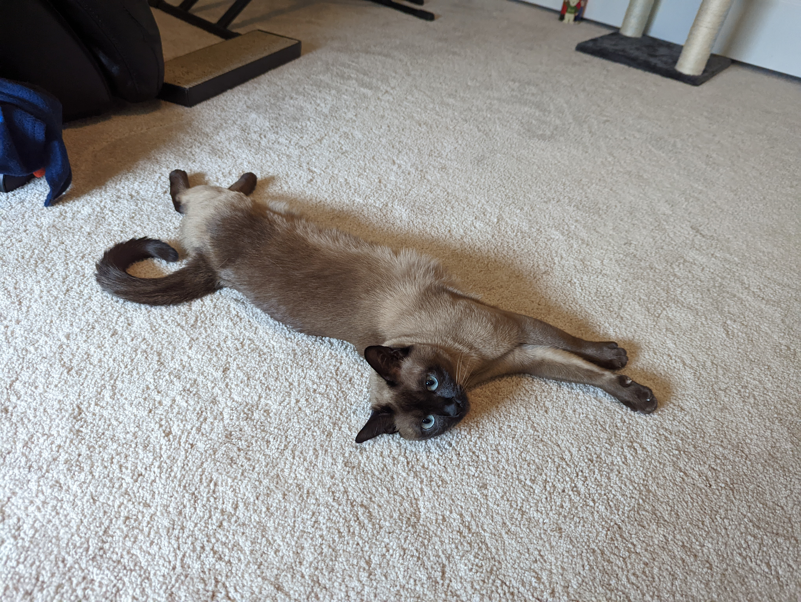
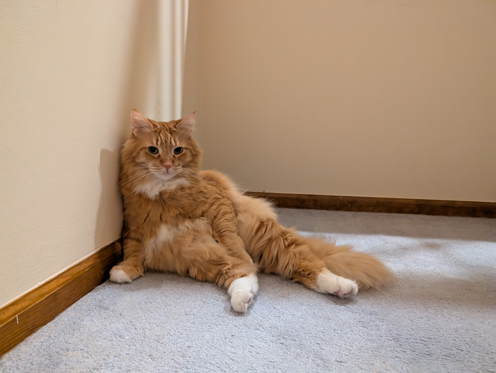

Yuna & Leo

Yuna
Born April 6, 2021, Yuna is a certified fancy cat. Literally. She holds a CFA certificate, which she takes very seriously. As a Tonkinese with a natural mink coat, she carries herself with the confidence of someone who knows they are objectively beautiful. She is the loudest and most playful cat in the apartment, right up until a stranger walks in, at which point she vanishes completely. Hold her long enough, though, and she will decide you are acceptable. She is a picky eater who snacks on her own schedule and occasionally expresses her feelings about the food situation by throwing up on the floor. On the bright side, she will let you hold her paws, which almost makes up for it.

Leo
Born on Halloween 2016, Leo arrived in December, presumably because he needed a dramatic entrance. He is likely a Maine Coon, which explains the 15 pounds, the spectacular long hair, and the attitude. His preferred hobby is sitting against a wall and judging whoever is in the room. Despite appearances, he is actually quite social and will walk up to complete strangers for pets, which is charming right up until you try to pick him up. Do not try to pick him up. Do not try to brush him either. Or clip his nails. There are scars. He does still have a playful side, though at his age he prefers to express it on his own terms. He is also particular about his water, which must be cold. Room temperature is not water. Both he and Yuna agree that vacuums are unacceptable and this is the one thing they will always agree on.